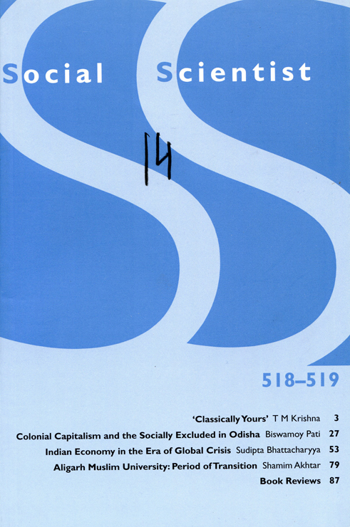

v. 44: No. 7-8 July-August 2017 #518-519
|
Editorial Note, p. 1 'Classically Yours,' T M Krishna, p. 3 "Colonial Capitalism and the Socially Excluded in Odisha," Biswamoy Pati, p. 27 "Indian Economy in the Era of Global Crisis," Souvanic Roy, p. 29 "Aligarh Muslim University: Period of Transition," Shamim Akhtar, p. 79 |
 Click to see larger |
Book Reviews, p. 87-103
 p. 87. Anirudh Deshpande's review of
p. 87. Anirudh Deshpande's review of
The Republic of Reason - Words They Could Not Kill: Selected Writings of Dabholkar, Pansare and Kalburgi, Sahmat, New Delhi, 2015, 120 pages, Rs. 120.
p. 89. Jahar Kanungo's review of R. L. Shukla, Living with Disasters, Cambridge University Press, New Delhi, 2016, 180 pages, Rs 895.
p. 92. Sunny Kumar 's review of Mujibur Rehman (ed.), Communalism in Postcolnial India: Changing Contours, Routledge, New York, 2016, 275 pages, Rs 895.
p. 96. Amit De's review of Fahmida Suleman (ed.), People of the Prophet's House: Artistic and Ritual Expressions of Shi'i Islam, The Institute of Ismaili Studies, London, 2015, price not mentioned
p. 99-103. Ashok K. Pankaj 's review of Diego Maiorano, Autumn of The Matriarch: Indira Gandhi's Final Term in Office, Harper Collins, Noida (India), 2015, 261 pages, Rs 595
Back to the top.
Back to the top.
Editorial Note
The current issue of Social Scientist has as its lead article the text of the Kumar Gandharva Memorial lecture delivered by T.M. Krishna, the renowned vocalist of Karnatic music. Krishna addresses the question: what exactly do we mean by 'classical' when we talk, say, of classical music? What is it that defines such music as 'classical'? In a remarkable tour deforce, he rejects all the answers that are usually provided to this question. 'Classi- cality' resides neither in its greater antiquity (since much of what we call 'classical' today has come into being in more recent times, and, conversely, many non-'classical' forms actually go back a long way), nor in its greater 'sophistication', since 'sophistication' has to be seen from within a tradition rather than as an extrinsic criterion applied from outside of it. Krishna sees 'classical' as an intentional bringing together of raga, tala, and vak in an abstract melodic form, in which musicality is not superimposed on a literary text (sahityd) but which uses words or vocal expressions for its own melodic purpose.
This detaching of 'classical' music from a specific historical or religious context is as novel as it is fascinating. It enables the author to argue that new 'classical' forms including even fusion music may evolve in the future which intentionally aspire for this same melodic abstraction, just as jazz has evolved as a new 'classical' form in the West in the more recent past.
Biswamoy Pati's article examines the process of immiserisation of the tribals, the dalits and the 'lower castes' in Odisha with the introduction of 'colonial modernity' in the nineteenth century. The author takes three regions in the state - Puri, Kalahandi and Mayurbhanj - and shows that basic economic processes hardly differed between the British-administered areas and the princely states.
The development of Puri as a pilgrim centre, yielding significant pil-grim tax revenue, saw the phenomenon of colonial urbanisation, with the victims of'drain' and 'deindustrialisation' in adjoining areas flocking to the city for livelihood. This created a divided city: a 'white Puri' that was clean and luxurious, and a ghettoised segment teeming with the poor and prone to disastrous outbreaks of diseases like cholera. Kalahandi saw the dispossession of the tribal population by a new class of feudal elements sustained by colonialism; the dispossessed tribals served them, along with other sections of dalits and 'lower castes', as labourers and inferior tenants. In Mayurbhanj the ruler collaborated with the Tatas to dispossess tribals from
Social Scientist, p. 2
their land to facilitate the mining of iron ore; the dispossessed were forced to work for a pittance in the mines under extremely hazardous conditions. Though the specificities differed across the three cases, each was characterised by what one might call a process of 'primitive accumulation of capital'.
Neo-liberal economic 'reforms' were introduced in India exactly a quarter of a century ago. Sudipta Bhattacharyya's paper assesses the impact of these reforms on the Indian economy over this quarter-century. He demolishes a number of myths which have been propagated about neoliberalism in the media and in the public discourse, and presents an array of statistics to show how, despite apparently high GDP growth rates, there has been a massive increase in inequality and in the nutritional deprivation of the mass of the people over this period. The increase in inequality has not been confined to India; it has been a global phenomenon which also explains the world capitalist crisis that has persisted now for almost a decade. This period of crisis has further worsened the conditions of the working people of the country who had not even benefited from the phase of high GDP growth.
Finally we publish a piece by Shamim Akhtar recounting the history of the Aligarh Muslim University during the turbulent years between 1947 and 1950. AMU had earlier been a centre of Muslim League politics and active in the cause of partition; but when partition actually came it was left within a Hindu-majority India, and also lost its catchment area in the Punjab. What is more, it was afflicted by an exodus of students and faculty members who migrated to Pakistan. How AMU coped with this loss, how it weathered the horrendous communal riots after partition, how it faced the arrest of progressive students during the clamp-down against the Communist Party, and how it overcame the financial crisis of those early years, form the substance of Shamim Akhtar's narrative.
Back to the top.
Webbed by
Philip McEldowney
Last update:
count -